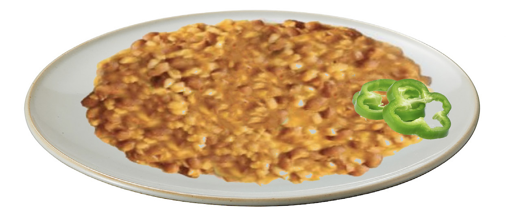

Food and Human Nutrition
Form Two
4. Heat the cooking oil in a cooking pan and fry the onions until they become light brown. Add grated carrot, salt and spices.
5. Add the mixture of maize and beans and stir it well. Leave it to boil for a while.
6. Add coconut milk or groundnuts while stirring it occasionally and allow it to simmer until the liquid is nearly drying up but leaving the food with enough stew.
7. Serve it on a plate and garnish it with a sliced green pepper or any suitable garnish as shown in Figure 2.5.

Figure 2.5: Maize and kidney beans
Loshoro
Ingredients ( serve 4 people)
250 g dehulled maize 4 soft green bananas
1 litre sour milk
Water
1 stalk of parsley
Method
1. Wash and boil the maize until nearly tender.
2. Peel the bananas, slice them thinly and wash them well.
3. Add the bananas into the maize and continue cooking until they are soft to mash.